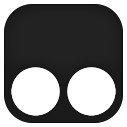

Userscripts
AKA Greasemonkey
¿Qué son?
Scripts js que se inyectan al cargar una página
Historia
- 2004: +

- 2005:
- 2010:

- 2010:  +
- 2010: +

¿Qué tan poderosos son?
- Extensión
- Userscript
- Bookmarklet
Básicamente puede hacer lo mismo que la página, pero tiene acceso a una pequeña API
Metadata
// ==UserScript==
// @key value
// ==/UserScript==
@name@namespace@include/exclude@grant@require@run-at@resource- y un montón más...
API
GM_(set|get|delete)ValueGM_xmlhttpRequestGM_registerMenuCommandGM_getResource(Text|URL)GM_setClipboard- y unos pocos más...
¡OJO!
Código corre en sandbox
- Si se
@grantean permisos para usar la API, se pierde el acceso a las variables de la página -
Callbacks a funciones del script no funcionan si se llaman como string
-
setTimeout('hola()', 1000) -
div.innerHTML = '<button onclick="chao()">'
-